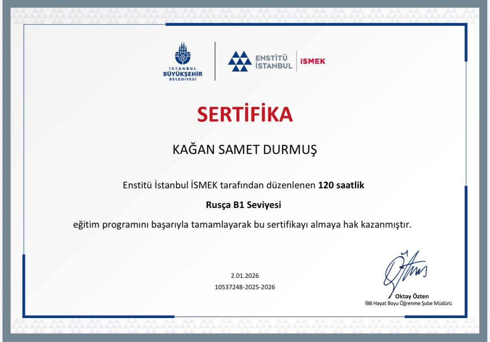
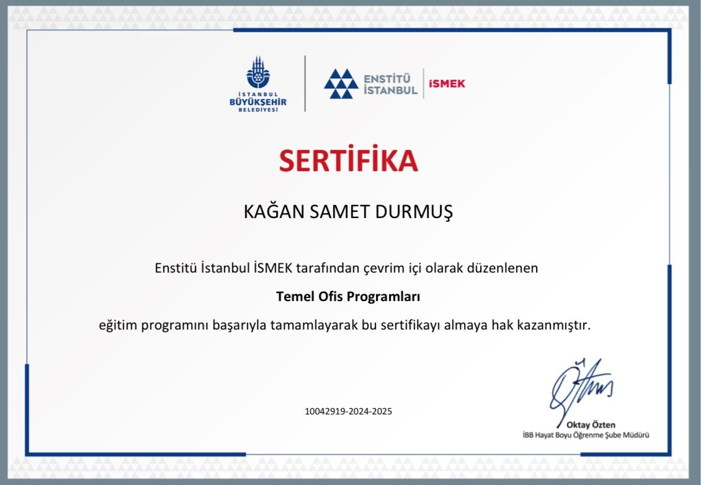
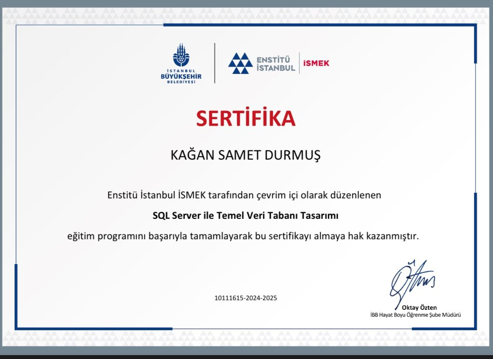
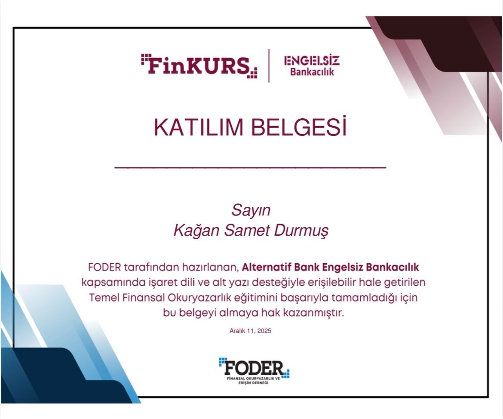
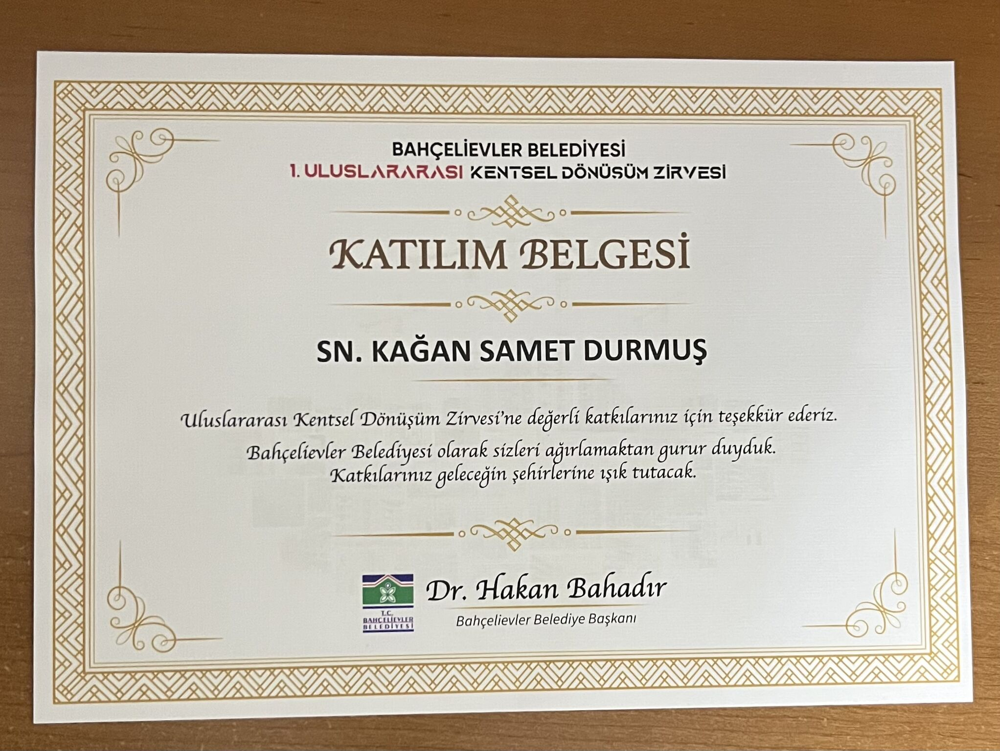
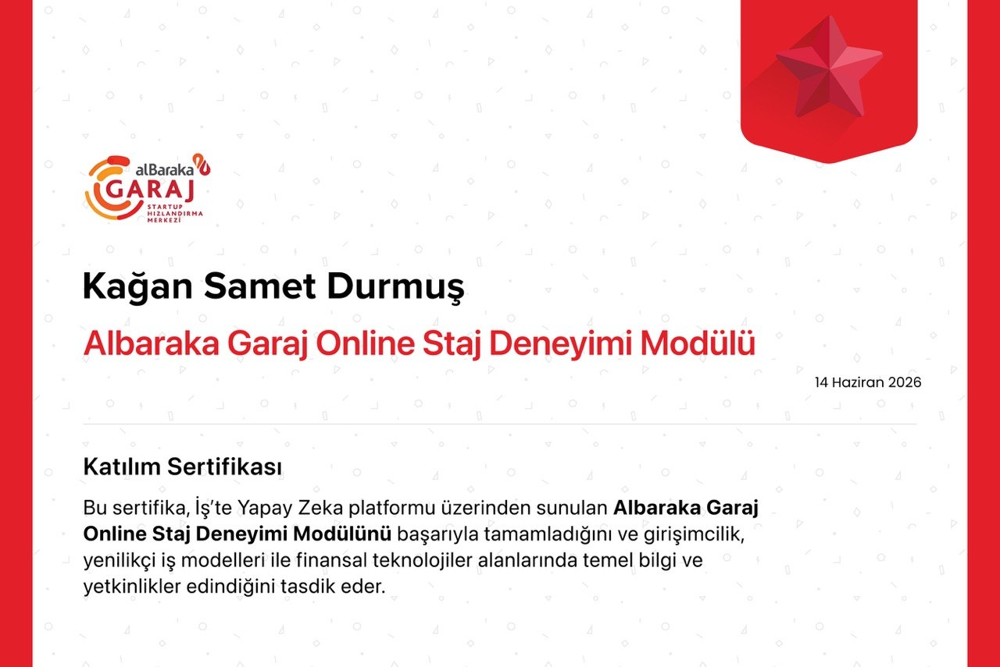

1Ci Low-Code ERP Eğitimi
ERP sistemleri, iş süreçleri ve yazılım geliştirme kesişimindeki eğitimi destekler.
Bu sayfa bağımsız bir galeri değil; proje ve yetenek kümelerini destekleyen eğitim, etkinlik ve dış doğrulama katmanıdır.
ERP sistemleri, iş süreçleri ve yazılım geliştirme kesişimindeki eğitimi destekler.

Proje ve etkinlik katılımını, sosyal etki odağıyla birlikte gösterir.

Ürün fikri, teknoloji ve girişimcilik yönündeki gelişimi destekler.

Çok dilli iletişim ve Rusça öğrenimi yönünü doğrulayan dil kaydı.

Excel, operasyonel kayıt, raporlama ve iş akışı takibi temelini destekler.

Veritabanı modelleme, SQL ve veri yönetimi odağına dış eğitim kanıtı ekler.

Fintech ve finans araştırması yönünü destekleyen finansal okuryazarlık kaydı.

Etkinlik operasyonu ve organizasyon katkısını gösteren katılım kaydı.

Katılım bankacılığı farkındalığı ve etkinlik katılımını destekleyen kayıt.
Sertifikaları, yetenek kümeleri ve proje kanıtları ile birlikte değerlendirin.